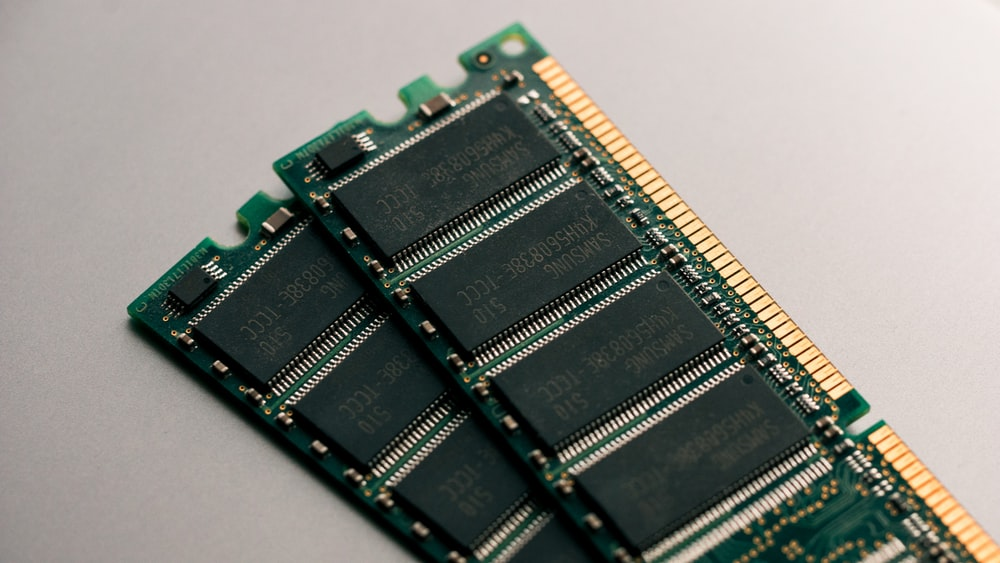

Оперативное запоминающее устройство (ОЗУ) — один из компонентов компьютера. Служит для временного хранения данных и передачи их процессору.
Тип оперативной памяти
Существует несколько типов оперативной памяти DDR2, DDR3 и DDR4. Первые 2 считаются устаревшими и большинство производителей новых материнских плат уже их не поддерживают. Типы оперативной памяти отличаются между собой скоростью, меньшим напряжением и питанием.
Частота оперативной памяти
Частота оперативной памяти увеличивается в каждом новом поколении, и от нее напрямую зависит пропускная способность планки ОЗУ. Но установка планок памяти с наибольшей частотой работы совсем не гарантирует существенный прирост производительности системы. К примеру, при обычном использовании ПК пользователь не ощутит разницы от использования памяти с частотой 1066 МГц и 1600 МГц, так как есть другие параметры, ограничивающие ее работу. Разница будет видна разве что при тестировании специальными программами. Но вот разницу в 3666 и 4600 уже будет видно невооруженным глазом.
Тайминги оперативной памяти Тайминги ОЗУ, это как раз тот параметр, который может существенно ухудшить производительность планки оперативной памяти. Тайминги, это временные задержки между выполнением команд планкой оперативной памяти, которые выражаются в пропущенных тактах шины памяти. С увеличением частоты работы оперативной памяти существенно возрастают и тайминги, что, например, при разгоне ОЗУ, может привести даже к ухудшению результата по сравнению со штатными параметрами работы.
Объем оперативной памяти Объем оперативной памяти на самом деле интересует пользователя больше всего, ведь от количества установленной памяти зависит работа всей системы. Если памяти будет очень мало, запущенные ресурсоемкие приложения будут сильно подтормаживать. Минимум сейчас устанавливают 2 ГБ ОЗУ на самые слабые машины. На настольные домашние ПК устанавливают не менее 4 ГБ, а для запуска требовательных игр на максимальных настройках потребуется не менее 8 ГБ оперативной памяти.